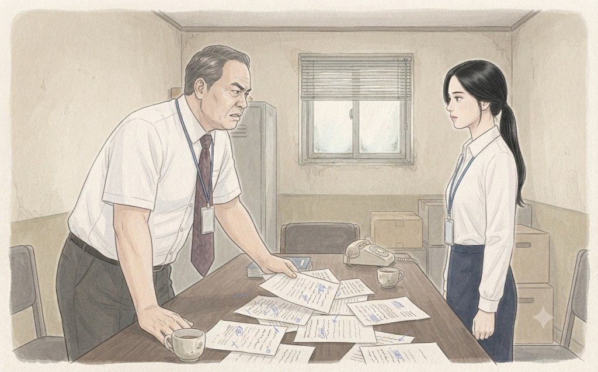
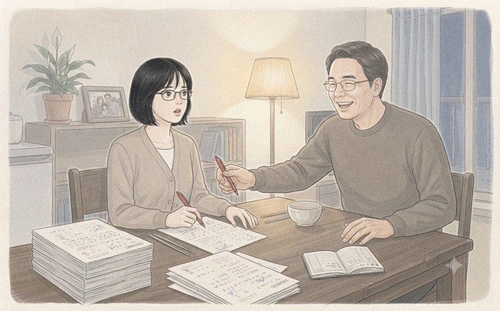
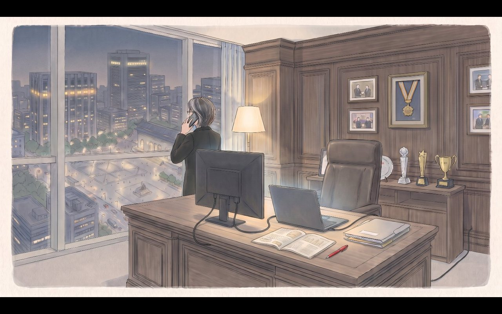

1990년 3월, 서울 을지로. 청연그룹 본사 재무팀.
스물네 살 문혜경은 재무팀의 첫 여성 대졸 공채였다. 그 전까지 재무팀의 여성은 모두 '경리 담당'이었다. 고졸 입사, 결혼하면 퇴사. 그게 당연하던 시절이었다.
첫 출근 날, 재무팀장 구본혁 부장이 그녀의 책상을 가리켰다. 사무실 맨 끝, 복사기 옆이었다.
"문혜경 씨는 일단 전표 정리부터 해요. 차차 배우고."
같은 날 입사한 남자 동기 셋은 첫날부터 자금 계획 회의에 들어갔다.
문혜경은 반박하지 않았다. 대신 전표를 정리했다. 석 달 동안 이천삼백 장. 그녀는 전표를 정리하면서 숫자를 외웠다. 어느 사업부가 어떤 거래처에 얼마를 쓰는지, 어느 달에 현금이 비는지, 어느 숫자가 매달 조금씩 틀리는지.
1990년 7월. 첫 번째 '왜'.
월말 결산 보고 회의. 재무팀장이 임원들 앞에서 보고서를 읽었다. 문혜경은 회의실 맨 뒤에서 차를 따르고 있었다. 신입 여사원에게 주어진 회의 참석 방식이었다.
보고서의 숫자 하나가 틀렸다. 생활용품 사업부 판촉비. 그녀가 석 달 동안 정리한 전표와 맞지 않았다. 4천만 원이 차이 났다.
회의가 끝난 뒤, 그녀는 구본혁에게 갔다.
"부장님. 생활용품 판촉비가 전표 합계랑 4천만 원 달라요."
구본혁은 보고서를 보지도 않았다.
"사업부에서 올라온 숫자예요. 우리가 손대는 게 아니에요."
"왜요?"
구본혁이 처음으로 그녀를 똑바로 봤다. 신입 여사원이 부장에게 '왜'라고 묻는 건 그 회사에서 처음 있는 일이었다.
"문혜경 씨. 회사에는 '왜'를 묻는 사람이 있고, 대답하는 사람이 있어요. 문혜경 씨는 아직 어느 쪽도 아니에요."
그날 밤 그녀는 혼자 남아 전표를 다시 맞췄다. 새벽 2시, 4천만 원의 행방을 찾았다. 생활용품 사업부 판촉비 일부가 영업 담당 임원의 접대비로 처리되어 있었다. 증빙은 엉망이었다.
그녀는 그 결과를 정리해 보고서로 썼다. 파란 볼펜으로 고친 초안이었다. 다음 날 아침 구본혁의 책상에 올렸다.
구본혁은 보고서를 훑어보고, 그녀를 회의실로 불렀다. 문을 닫았다.
"문혜경 씨. 이거 장난해요?"
"아닙니다."
"파란 볼펜으로 고친 걸 보고서라고 올려요? 이게 무슨 학교 숙제예요?"
그는 보고서를 책상 위에 던졌다. 그리고 낮게 말했다.

"이거 덮어요. 그게 문혜경 씨를 위한 거예요."
문혜경은 보고서를 집어 들었다. 그리고 그 자리에서 나가지 않았다.
"부장님. 덮으면 누구를 위한 건데요?"
1990년 9월. 재무감사.
그룹 감사실이 생활용품 사업부를 감사했다. 문혜경이 제보한 게 아니었다. 다른 경로였다. 하지만 감사실이 가장 먼저 찾은 자료는 재무팀 전표였고, 그 전표를 가장 정확히 아는 사람은 복사기 옆 책상의 신입이었다.
감사 결과, 영업 담당 임원이 물러났다. 구본혁 부장은 '관리 소홀'로 견책을 받았다. 그리고 문혜경은 다음 해 자금 계획 회의에 처음으로 들어갔다.
첫 회의 날, 그녀는 빨간 볼펜 한 자루를 샀다.
파란 볼펜은 버렸다. 그날부터 그녀는 보고서를 고칠 때 빨간 볼펜만 썼다. 틀린 숫자에는 동그라미, 근거 없는 문장에는 밑줄, 다시 물어볼 것에는 물음표.
빨간 볼펜은 그녀의 무기였다. 동시에 갑옷이었다. 빨간색으로 고친 보고서를 '학교 숙제'라고 부르는 사람은 없었다.
2006년. 청연그룹 첫 여성 재무 부장.
그해 그녀는 결혼했다. 마흔 살. 상대는 대학 시절 같은 과 선배, 고등학교 수학 교사였다. 아이는 갖지 않기로 했다. 둘이 정한 일이었다. 회사 사람들은 그녀를 두고 말했다. 일과 결혼한 여자. 감정이 없는 여자. 숫자만 아는 여자.
그녀는 반박하지 않았다. 반박할 시간에 숫자를 하나 더 봤다.
남편 서경훈은 그녀를 '빨간 볼펜'이라고 불렀다. 집에서만. 저녁 식탁에서 그녀가 남편이 채점하던 학생 시험지를 무심코 빨간 펜으로 고칠 때마다, 그는 웃으며 펜을 빼앗았다.

"여기는 회사 아니야. 틀려도 돼."
그 말을 들을 때마다 문혜경은 이상하게 목이 메었다. 틀려도 되는 곳. 그녀에게 그런 곳은 집밖에 없었다.
2021년 6월, 금요일 밤 10시. 청연그룹 지주사 사장실.
문혜경은 쉰다섯 살이었다. 지주사 전략재무총괄 사장. 책상 위에는 청연화장품 상반기 실적 예상치가 펼쳐져 있었다. 내일 토요일 회의는 상반기 결산 직전 마지막 회의였다.
온라인 매출 성장률. 목표 25%. 예상 14%.
그녀는 빨간 볼펜으로 14에 동그라미를 쳤다. 그리고 그 옆에 물음표를 그렸다. 그리고 한참 펜을 들고 있었다.
석 달 동안 토요일 아침마다 그 회의실에 앉았다. 결제 단계는 아홉에서 다섯으로 줄었다. 상세페이지 전환율은 1.3배가 되었다. 멕시코 편의점 결제가 붙었다. 신입 사원이 '하룻밤이면 돼요'라고 말했고, 해외사업팀장이 자기 실수를 회의록에 적어 달라고 했다.
모두 좋은 변화였다. 그런데도 숫자는 14%였다.
휴대폰이 울렸다. 남편이었다.
"아직 회사야?"
"응. 내일 회의 자료 보고 있어."
"혜경아. 너 요즘 토요일 회의 얘기할 때 목소리가 달라."
"어떻게?"
"처음에는 화가 나 있었는데, 요즘은... 걱정하는 목소리야."
문혜경은 대답하지 않았다. 남편은 30년 동안 그녀의 목소리를 들어 온 사람이었다.
"당신이 말하던 그 온라인팀 사람들, 잘하고 있는데 숫자가 안 나와서 그래?"
"...응."
"그럼 내일 뭐라고 할 건데."
문혜경은 빨간 볼펜을 내려놓았다. 창밖으로 광화문의 불빛이 보였다. 29층에 아직 불이 켜져 있었다. 금요일 밤 10시. 내일 회의를 준비하는 사람들이었다.

"경훈 씨. 나 1990년에 처음으로 '왜'라고 물었을 때, 부장님이 뭐라고 했는지 알아?"
"회사에는 왜를 묻는 사람이랑 대답하는 사람이 있다고."
"그 얘기 했었나?"
"서른 번쯤."
문혜경은 웃었다. 오랜만에 소리 내어 웃었다.
"나는 30년 동안 '왜'를 묻는 사람이 되려고 했어. 그리고 됐어. 그런데 요즘 토요일마다 그 회의실에 앉아 있으면, 그 사람들이 대답하는 걸 보면..."
그녀는 말을 멈췄다.
"보면?"
"그 부장님이 생각나. 대답하는 사람 쪽에 서 있던 나를, 아무도 안 봐 줬던 거."
남편은 한참 아무 말도 하지 않았다. 그리고 조용히 말했다.
"그럼 내일은 봐 줘. 숫자 말고, 사람."
통화를 끊고, 문혜경은 출력본을 다시 펼쳤다. 14%라는 숫자 옆에 그녀가 그린 물음표가 보였다. 그녀는 그 옆에 빨간 볼펜으로 한 줄을 더 적었다.
'숫자는 미달. 사람은?'
그리고 그 아래, 아주 작은 글씨로.
'- 내일 모두 말하게 할 것.'
토요일 오전 5시 30분. 청연타워 29층.
이우진은 대회의실 불을 켰다. 그런데 테이블 맨 앞자리에 이미 출력본 한 부가 놓여 있었다. 문혜경의 자리였다. 양은주 과장이 전날 밤 가져다 놓은 것 같았다.
출력본 표지 위에 빨간 볼펜 한 자루가 올려져 있었다. 뚜껑이 닫힌 채로.
이우진은 그 볼펜을 한참 봤다. 석 달 동안 한 번도 회의 전에 뚜껑이 닫혀 있던 적이 없었다.
그는 그게 무슨 뜻인지 몰랐다. 다만 오늘 회의는 지금까지와 다를 거라는 예감이 들었다.
(EP25 끝)